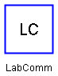
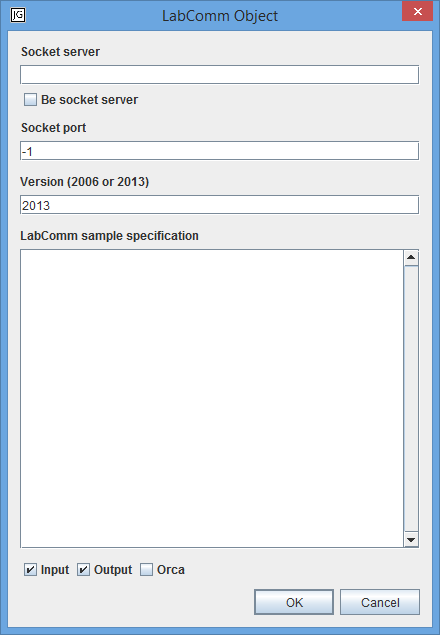

A LabComm Object is used for LabComm protocol communication over TCP sockets. The data in the LabComm Object is accessed with dot-notation. Primitive LabComm types are mapped to the corresponding JGrafchart variable types. One-dimensional LabComm arrays of primitive types are mapped to JGrafchart lists. Other arrays are not supported. When a LabComm sample is received the data in the LabComm Object is updated accordingly. LabComm samples are sent with lcSend(). lcReceived() is used to check if LabComm samples have been received since the previous scan cycle.
Edit
Opens an edit dialog for the LabComm Object.

Socket server LabComm TCP socket server to connect to as a client.
Be socket server Be a LabComm TCP socket server which LabComm clients may connect to.
Socket port The port number of the LabComm TCP socket server.
Version LabComm version.
LabComm sample specification The declaration of supported samples and types.
Note: Currently, only flat struct samples are supported.
Input The specified samples can be received.
Output The specified samples can be sent.
Orca Special purpose only: Set up the connection over an Orca channel. Only available when connecting as a client with version 2006.
Table
Opens an Inspector for the LabComm samples.
Note: Only works after compilation.